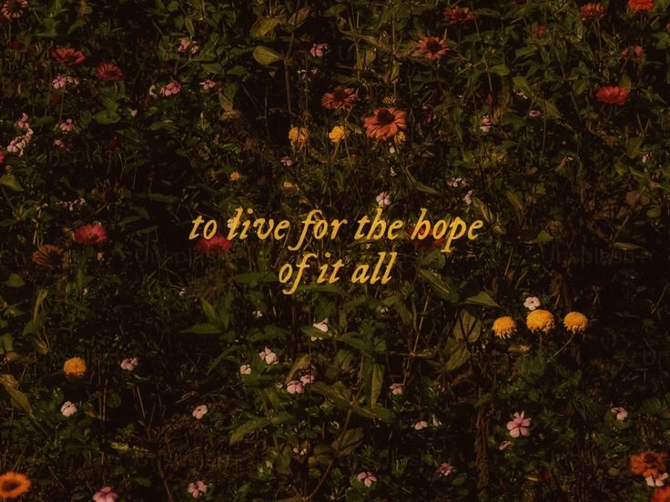
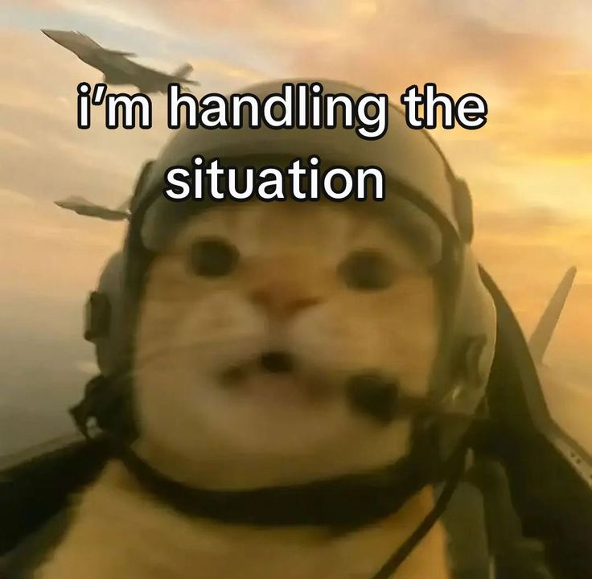
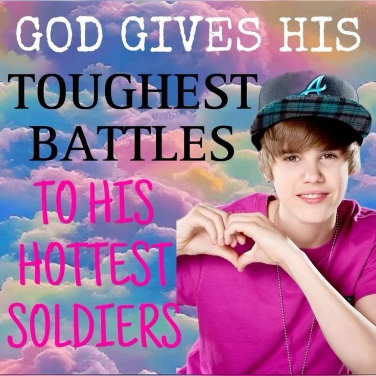

You are needed here.
Welcome to a safe space. Whether you are looking for a sign to keep going, a moment to catch your breath, or immediate support, you are in the right place.
Reasons to Stay

🤪 The Silly & Petty
- Outliving the stress: Staying alive purely out of spite so toxic groupmates, harsh professors, and your ex don't see you give up.
- Pickleball sessions: Laughing off ridiculous missed shots and sweating out your academic anxiety on a weekend.
- Campus cats: Checking up on the chubby, unbothered stray cats sleeping in the middle of the hallway.
- Unfinished stories: Staying around for your idols' next comeback, your favorite anime finale, or that endless Webtoon.
- Thesis credit: Seeing your name permanently printed on that hardbound cover just to prove you conquered it.
- Unli rice & wings: Testing your stomach's absolute limits at Mang Inasal or an unli wings place after finals week.

🌱 The Small & Mundane
- Post-exam food runs: That instant wave of relief when you step out of a grueling exam into hot siomai rice or spicy pater.
- Golden hour pauses: Catching the exact second the sky turns orange and pink, taking a photo that stops your scrolling.
- Matcha rewards: That iced matcha latte turning a soul-crushing study afternoon into a quiet, cozy ritual.
- Surprise "Walang Pasok": Waking up at 5:30 AM to heavy rain, seeing the LGU suspension, and pulling the blanket back up.
- Library nap spots: Finding that one ice-cold corner in the university library where the aircon hits just right.
- First morning sips: Cheap, sweet iced coffee cutting through a humid morning right before a 7:00 AM lecture.
- Commute luck: Snagging a seat on a packed jeepney the second your feet are about to give out.

⚓ The Serious & Grounding
- Walking across the stage: Hearing your name called and realizing you survived every midnight breakdown and failed quiz.
- First "adult money" win: Buying that item saved in your online cart and treating your family without checking your balance.
- Future versions of you: The person you'll be five years from now—deeply at peace, endlessly grateful you chose to stay today.
- People you haven't met yet: Future best friends, mentors, and partners whose lives will be genuinely brighter because you're in them.
- Becoming who you needed: Standing tall enough to offer younger students and family members the exact grace and safety you wished you had.
Sh*tposts
Because sometimes life is full of sh*t.

Me during midterms

It is what it is
Grounding Techniques
When everything feels too loud, try these techniques to bring yourself back to the present moment.
🖐️ The 5-4-3-2-1 Method
Look around you and name out loud:
- 5 things you can see: A pen, a clock, the texture of the wall.
- 4 things you can feel: Your feet on the floor, the fabric of your shirt, the cool air.
- 3 things you can hear: Traffic outside, a fan humming, distant voices.
- 2 things you can smell: Coffee, soap, or the scent of rain.
- 1 thing you can taste: A mint, lingering toothpaste, or just take a cold sip of water.
🌬️ Box Breathing
Follow the circle below to reset your nervous system:
- Inhale as the circle expands (4 seconds).
- Hold as it stays large (4 seconds).
- Exhale as it shrinks (4 seconds).
- Hold as it stays small (4 seconds).
Reach Out For Help
You do not have to carry this alone. There are people waiting to listen.
📞 Crisis Hotlines & Mental Health Support
- National Center for Mental Health (NCMH) (Available 24/7)
Mobile: 0917-899-8727 | Toll-free Landline: 1553
- HOPELINE Philippines / DOH (Available 24/7)
Mobile: 0917-558-4673
- Philippine Mental Health Association (PMHA)
Mobile: 0917-565-2036 (Mon-Fri, 7AM-4PM) | Email: cisd@pmha.org.ph
- Ateneo Bulatao Center for Psychological Services
Email: bulataocenter.ls@ateneo.edu
- DSWD Mental Health Line
Mobile: 0918-912-2813 | Email: wisupport@dswd.gov.ph
- Tawag Paglaum - Centro
Bisaya: 0966-467-9626